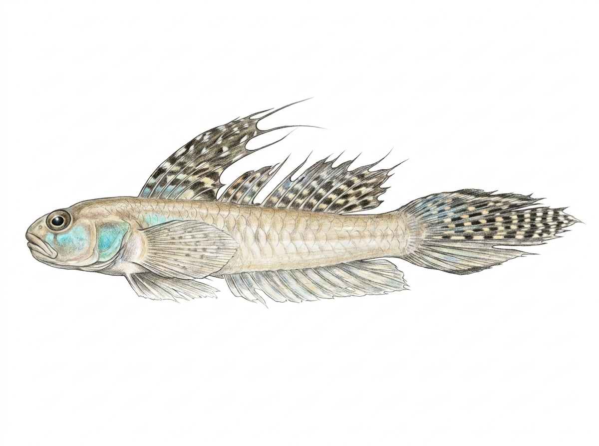

Sharptail Goby
Oligolepis acutipinnis
Family: Gobiidae
The Sharptail Goby (Oligolepis acutipinnis), known locally as වැලි ගොව්වා (Weligovwa), is a coastal and estuarine freshwater goby belonging to the family Gobiidae. Like other members of its family, it features two distinct dorsal fins and fused pelvic fins that form a sucker disc, helping it maintain stability against underwater currents. It is most easily identified by its noticeably elongated, pointed caudal (tail) fin, which gives the species its common name. Typically brownish-yellow with dark spots or blotches along its flanks, this small goby frequents sandy or muddy bottoms of estuaries, river mouths, and lower freshwater reaches where it feeds on micro-invertebrates and organic detritus.